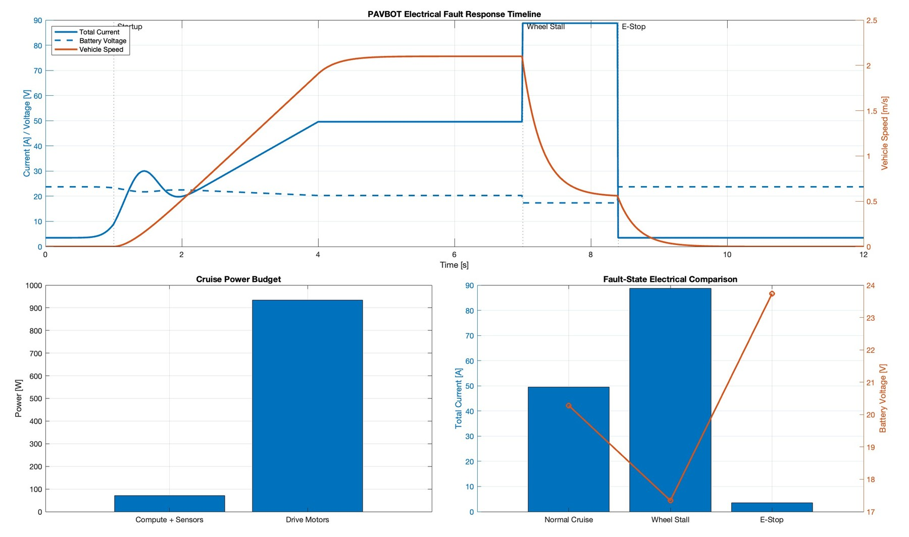

Option 3 / Technical Board
Power + Control Architecture
This option is darker and more instrumentation-oriented. It works best if you want the projects to feel like hardware systems rather than case-study articles.
24 V Battery Feed
Step-Down Rails
Relay Logic
Motor Drivers
01Model
02Wire
03Validate

The project story is presented like a system board: major signals, failure states, validation artifacts, and hardware photos in one compact technical view.
Current PAVBOT Page